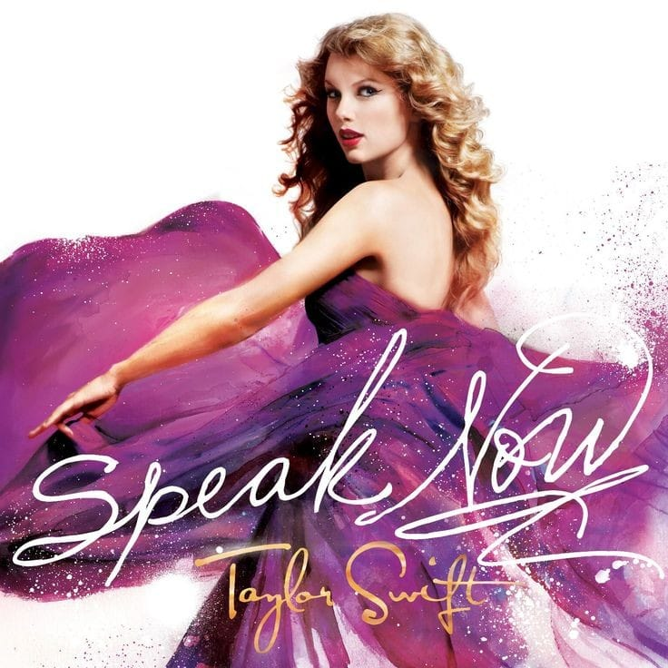

O álbum teve 6 singles, os mais ouvidos foram "Mine", "Back to December", "Sparks Fly" e "Ours".
Speak Now foi nomeado para Melhor Álbum Country, e seu terceiro single "Mean" ganhou Melhor Canção Country e Melhor Performance Solo Country no Grammy 2012.
Voltar